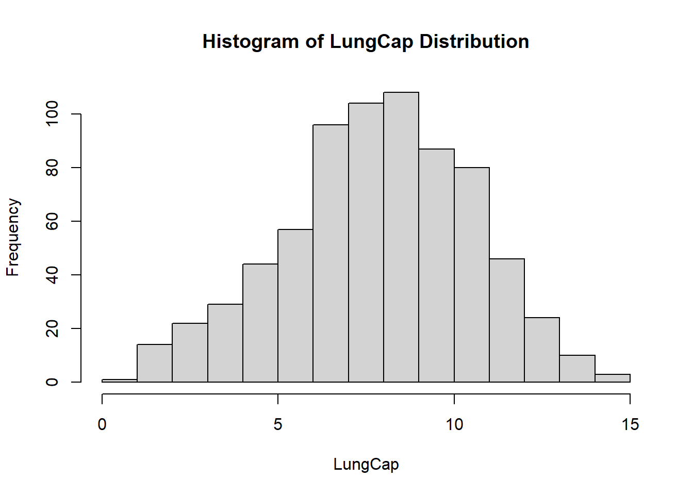
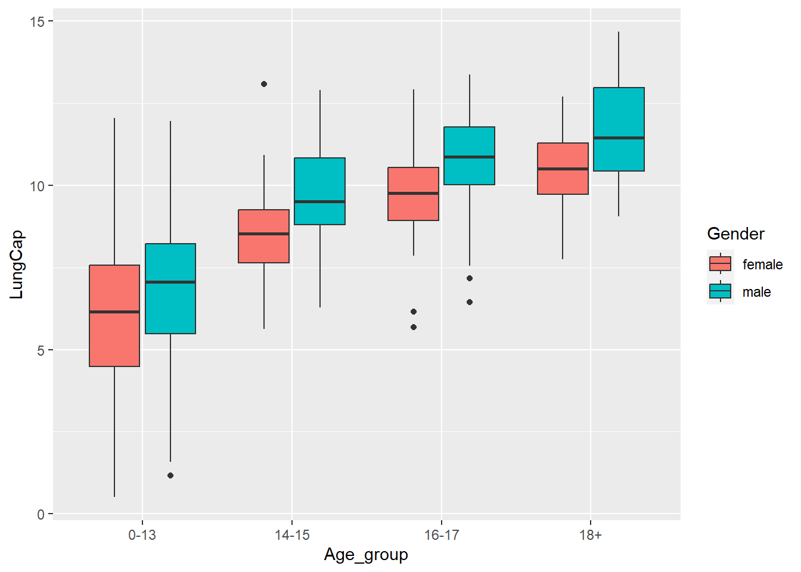

-- Attaching packages --------------------------------------- tidyverse 1.3.2 --
v ggplot2 3.4.0 v purrr 0.3.5
v tibble 3.1.8 v dplyr 1.0.10
v tidyr 1.2.1 v stringr 1.5.0
v readr 2.1.3 v forcats 0.5.2
-- Conflicts ------------------------------------------ tidyverse_conflicts() --
x dplyr::filter() masks stats::filter()
x dplyr::lag() masks stats::lag()
Code
library(ggplot2)library(formattable)
Question 1
a
First, let’s read in the data from the Excel file:
hist(df$LungCap, xlab='LungCap', main ='Histogram of LungCap Distribution')

The histogram suggests that the distribution is close to a normal distribution. Most of the observations are close to the mean. Very few observations are close to the margins (0 and 15).
##b
Compare the probability distribution of the LungCap with respect to Males and Females:
# A tibble: 2 x 2
Smoke Lungcap_Mean
<chr> <dbl>
1 no 7.77
2 yes 8.65
These results show the lung capacity for non-smokers is lower than the lung capacity for smokers. With no background knowledge of lung capacity, I would think these are not standard results.
##d)
Examine the relationship between Smoking and Lung Capacity within age groups: “less than or equal to 13”, “14 to 15”, “16 to 17”, and “greater than or equal to 18”.
Code
df_Agegroup <- df %>%mutate(Age_group = dplyr::case_when( Age <=13~"0-13", Age >13& Age <=15~"14-15", Age >15& Age <=17~"16-17", Age >=18~"18+"))ggplot(data = df_Agegroup, aes(x=Age_group, y=LungCap)) +geom_boxplot(aes(fill=Gender))

##e)
Compare the lung capacities for smokers and non-smokers within each age group. Is your answer different from the one in part c. What could possibly be going on here?
This data is different from what was seen in part C. The only age group displaying greater lung capacity for smokers is the group 0-13. This would suggest this sample of the population is influencing the overall lung capacity mean. This by far is the largest sample of age groups with 428 participants
Code
count(df_Agegroup, Age_group, Smoke)
# A tibble: 8 x 3
Age_group Smoke n
<chr> <chr> <int>
1 0-13 no 401
2 0-13 yes 27
3 14-15 no 105
4 14-15 yes 15
5 16-17 no 77
6 16-17 yes 20
7 18+ no 65
8 18+ yes 15
---title: "Homework 1"author: "Alexa Potter"description: "DACSS 603"date: "02/25/2023"format: html: toc: true code-fold: true code-copy: true code-tools: truecategories: - hw1 - desriptive statistics - probability---# Load Libraries```{r}library(tidyverse)library(ggplot2)library(formattable)```# Question 1## aFirst, let's read in the data from the Excel file:```{r, echo=T}library(readxl)df <-read_excel("_data/LungCapData.xls")```The distribution of LungCap looks as follows:```{r, echo=T}hist(df$LungCap, xlab='LungCap', main ='Histogram of LungCap Distribution')```The histogram suggests that the distribution is close to a normal distribution. Most of the observations are close to the mean. Very few observations are close to the margins (0 and 15).##bCompare the probability distribution of the LungCap with respect to Males and Females:```{r}boxplot(df$LungCap~df$Gender, xlab ='Gender', ylab ='LungCap')```##cCompare the mean lung capacities for smokers and non-smokers. Does it make sense?```{r}LungCap_mean <- df %>%group_by(Smoke) %>%summarise(Lungcap_Mean =mean(LungCap))LungCap_mean```These results show the lung capacity for non-smokers is lower than the lung capacity for smokers. With no background knowledge of lung capacity, I would think these are not standard results. ##d) Examine the relationship between Smoking and Lung Capacity within age groups: “less than orequal to 13”, “14 to 15”, “16 to 17”, and “greater than or equal to 18”.```{r}df_Agegroup <- df %>%mutate(Age_group = dplyr::case_when( Age <=13~"0-13", Age >13& Age <=15~"14-15", Age >15& Age <=17~"16-17", Age >=18~"18+"))ggplot(data = df_Agegroup, aes(x=Age_group, y=LungCap)) +geom_boxplot(aes(fill=Gender))```##e) Compare the lung capacities for smokers and non-smokers within each age group. Is your answerdifferent from the one in part c. What could possibly be going on here?```{r}ggplot(data = df_Agegroup, aes(x=Age_group, y=LungCap)) +geom_boxplot(aes(fill=Smoke))```This data is different from what was seen in part C. The only age group displaying greater lung capacity for smokers is the group 0-13. This would suggest this sample of the population is influencing the overall lung capacity mean. This by far is the largest sample of age groups with 428 participants```{r}count(df_Agegroup, Age_group, Smoke)```# Question 2First create the dataframe:```{r}stateprison <-data.frame (X =c("0", "1", "2", "3", "4"),Frequency =c("128", "434", "160", "64", "24") )stateprison$Frequency <-as.integer(stateprison$Frequency)stateprison$X <-as.integer(stateprison$X)stateprison```##a What is the probability that a randomly selected inmate has exactly 2 prior convictions?```{r}formattable::percent(160/summarise(stateprison, sum(Frequency)))```##bWhat is the probability that a randomly selected inmate has fewer than 2 prior convictions?```{r}formattable::percent((128+434)/summarise(stateprison, sum(Frequency)))```##cWhat is the probability that a randomly selected inmate has 2 or fewer prior convictions?```{r}formattable::percent((128+434+160)/summarise(stateprison, sum(Frequency)))```##dWhat is the probability that a randomly selected inmate has more than 2 prior convictions?```{r}formattable::percent((64+24)/summarise(stateprison, sum(Frequency)))```##eWhat is the expected value for the number of prior convictions?```{r}stateprison_PRB <-transform(stateprison, PROB = (Frequency/810))df_prison_ev <-transform(stateprison_PRB, XP = X*PROB )EV <-sum(df_prison_ev$XP)print(EV)```##fCalculate the variance and the standard deviation for the Prior Convictions.Variance:```{r}varX <-sum(((df_prison_ev$X-EV)^2)*df_prison_ev$PROB)print(varX)```Standard deviation:```{r}sdX <-sqrt(varX)print(sdX)```